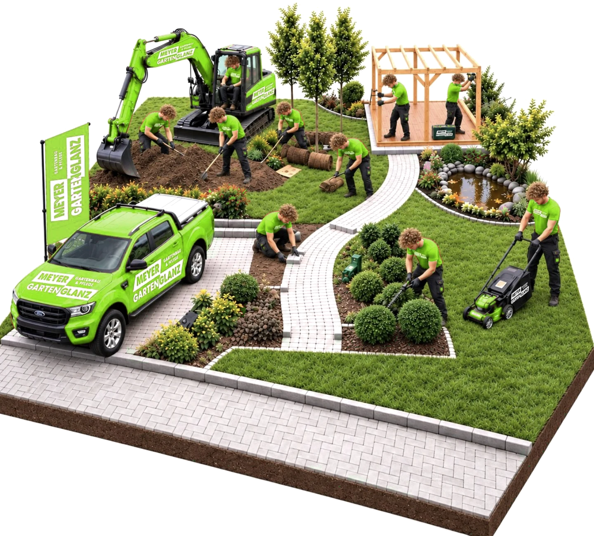
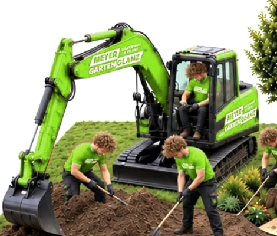
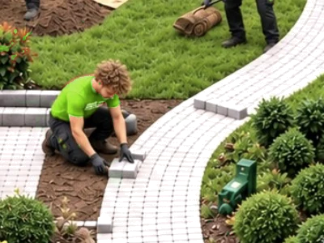
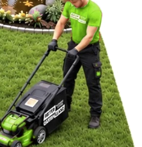
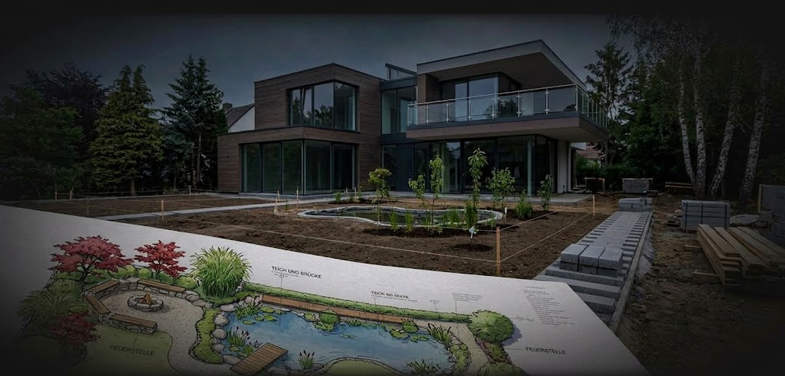
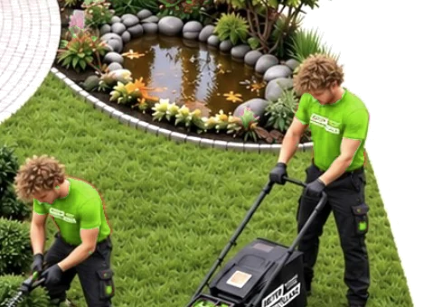

Planung, Bau & Pflege aus einer Hand
Mit Schweizer Präzision und einem tiefen Verständnis für die Natur gestalten, bauen und pflegen wir grüne Räume, die zum Verweilen einladen.


Jeder Garten ist anders. Wir planen und bauen nach Ihren Wünschen, nicht nach Schema.

Hochwertige Materialien und saubere Verarbeitung, damit Sie lange Freude an Ihrem Garten haben.

Feste Rhythmen, klare Absprachen – auf uns ist Verlass, Saison für Saison.
Gartenplanung
Von der ersten Standortanalyse bis zum fertigen Gestaltungskonzept: Wir planen Ihren Garten durchdacht und auf Ihre Wünsche zugeschnitten.
GARTENPLANUNG
Jedes Projekt beginnt mit einer durchdachten Planung
Wir analysieren Ihren Standort, entwickeln ein passendes Gestaltungskonzept und stimmen Pflanzen- und Materialwahl auf Ihre Wünsche ab.
Ihr Weg zum fertigen Gartenkonzept
Von der ersten Kontaktaufnahme bis zur Umsetzung begleiten wir Sie Schritt für Schritt – transparent, verbindlich und immer mit Ihnen im Austausch.
Kontaktaufnahme & Wünsche
Sie schildern uns Ihre Ideen, Ihren Platz und was Ihnen im Garten wichtig ist.
Standortanalyse vor Ort
Wir prüfen Boden, Lichtverhältnisse und Gegebenheiten direkt bei Ihnen im Garten.
Gestaltungskonzept & Bepflanzungsplan
Sie erhalten einen Entwurf mit stimmigem Konzept für Form, Material und passende Pflanzenauswahl.
Material- & Pflanzenberatung
Gemeinsam stimmen wir Materialien, Pflanzen und letzte Details auf Ihre Wünsche ab.
Kostenschätzung & Offerte
Sie erhalten eine transparente Kostenübersicht und einen verbindlichen Starttermin.
Persönliche Beratung & Umsetzung
Wir begleiten Sie persönlich von der Idee bis zur sorgfältigen Umsetzung durch unser Team.
Gartenbau
Kompetent und erfahren setzen wir Ihren Garten um – von den ersten Erdarbeiten bis zum letzten Grashalm, mit Schweizer Präzision und sichtbarem Resultat.
GARTENBAUVon der Planung zur Umsetzung
Ihr Garten, neu gebaut: Wir begleiten Ihr Projekt mit Schweizer Präzision und Referenzen im ganzen Thurgau.

Aussenanlagen
- task_altTerrassenbau
- task_altWegebau
- task_altTrockenmauern
- task_altSichtschutzbau
Wasser, Licht & Rasen
- task_altTeichbau
- task_altBewässerung
- task_altBeleuchtung
- task_altRasenneuanlage
Bereit, Ihren Garten neu zu bauen?
Vereinbaren Sie eine kostenlose, unverbindliche Erstberatung – wir besprechen Ihr Projekt und erstellen Ihnen eine transparente Offerte.
Kostenlose Erstberatung anfragen arrow_forwardGartenpflege
Für einen Garten, der sich von selbst um Sie kümmert: Wir übernehmen die wiederkehrende Pflege zuverlässig nach festem Rhythmus.
GARTENPFLEGEGartenpflege im Abo – bequem und planbar
Statt jeden Pflegeschritt einzeln zu organisieren, übernehmen wir Ihren Garten im festen Rhythmus. Sie legen gemeinsam mit uns fest, wie oft wir vorbeikommen – wir kümmern uns um den Rest.
- ecoRasenschnitt
- ecoHeckenschnitt
- ecoUnkrautentfernung
- ecoNeupflanzungen
- ecoBaum- & Strauchschnitt
- ecoBewässerungscheck
- ecoDüngung
- ecoLaub- & Grünschnittentsorgung
- ecoWinterschutz
So bleibt Ihr Garten das ganze Jahr über gepflegt – ohne dass Sie selbst daran denken müssen. Der Umfang und die Häufigkeit des Abos stimmen wir ganz auf Ihren Garten ab.
Unterhaltsabo anfragen arrow_forwardWenn schöne Gärten entstehen
Von der ersten Skizze bis zur letzten Pflanze: Jedes Projekt ist für uns ein eigenes kleines Handwerk, in das wir Erfahrung und Sorgfalt stecken.
Einen Eindruck unserer Arbeit und abgeschlossener Projekte finden Sie auf unserer Referenzseite.